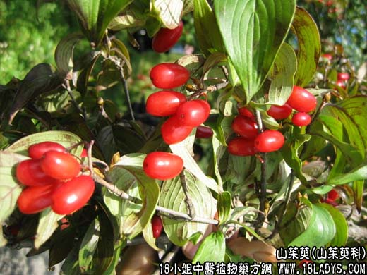

【中药概述】
为山茱萸科小乔木植物山茱萸的成熟果肉。酸，微温。归肝、肾经。
1．补肾涩精：用于肾虚阳痿遗精、腰膝酸冷、神被畏寒、小便频多等，如（杞菊地黄丸）、（<普济方>山茱萸丸）（<扶寿精方>草还丹）。
2．补益肝肾：用于肝肾不足、冲任虚损的崩漏带下、月经量多等，如（六味地黄丸）。
3．敛汗固脱：用于大汗不止，体虚欲脱，有敛汗固脱之效，可与人参，龙骨等配伍。
【药效鉴别】
山茱萸与熟地均能补益肝肾。但熟地长于益精血，其力较山茱萸为胜，但无助阳之功，不具收敛之性。本品既可补阴，又可补阳，故为补益肝肾（阴阳）的要药。
【药理作用】
1.有降血压作用；
2.有抑制肠痉挛作用；
3.对金黄色葡萄球菌、痢疾杆菌有抑制作用；
4.对因放疗、化疗引起的白血球下降有改善作用。
【化学成分】
含没食子酸、苹果酸、酒石酸、山茱萸甙及维生素A类物质。
【用量用法】
3——10g，水煎服。
【注】
山茱萸之核不入药用，应去核，而使其分量还足（避免以核充肉）。